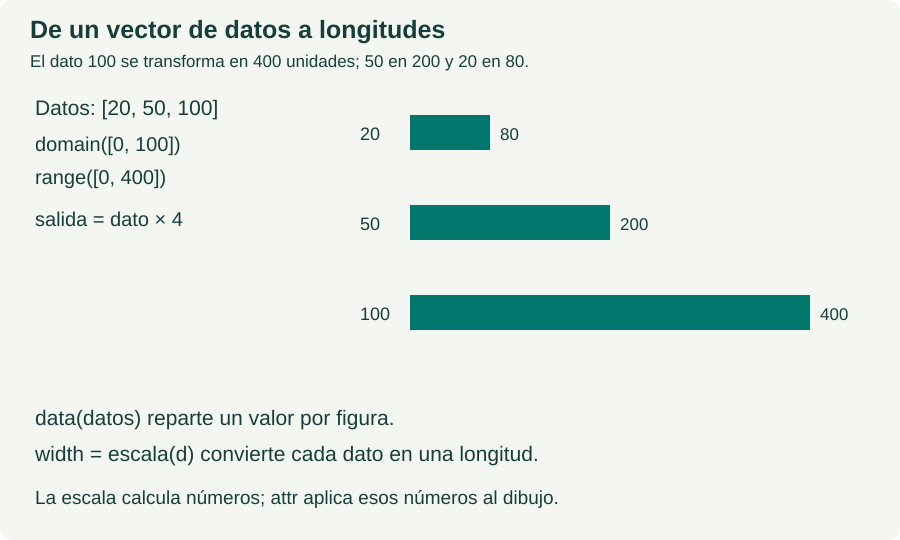

UN ARCHIVO · UN CONCEPTO
d3.scaleLinear
Con dos extremos numéricos, transforma valores de forma uniforme: a diferencias iguales de entrada corresponden diferencias iguales de salida. Es adecuada para barras con origen cero.
Empieza por scaleLinear, domain, range e invert. Después compara categorías con scaleBand y scaleOrdinal. Las escalas logarítmicas, cuantiles e interpolación son pasos posteriores.
Sintaxis
const escala = d3.scaleLinear(); escala.domain([0, 100]); escala.range([0, 400]); const longitud = escala(50);
Las variables tienen una función concreta. dimensiones guarda [500, 240]; ancho y alto leen sus dos posiciones. datos guarda tres cantidades independientes: 20, 50 y 100. Ninguno de estos nombres es un comando de D3.
Resultado esperado: Tres barras con anchuras 80, 200 y 400; todas tienen altura 30.
Ejemplo paso a paso
JavaScript del ejemplo y resultado para d3.scaleLinear.
HTML inicial dentro de #demo
<svg id="lienzo" viewBox="0 0 500 240">
<g id="barras" transform="translate(50,30)" fill="teal">
<rect y="0" height="30"/>
<rect y="60" height="30"/>
<rect y="120" height="30"/>
</g>
</svg>JavaScript del ejemplo
// 1. El tamaño del lienzo se guarda como [ancho, alto].
const dimensiones = [500, 240];
const ancho = dimensiones[0];
const alto = dimensiones[1];
const margen = 50;
d3.select("#lienzo").attr("viewBox", "0 0 " + ancho + " " + alto);
// 2. Este otro vector contiene tres datos, no dimensiones.
const datos = [20, 50, 100];
const escala = d3.scaleLinear();
escala.domain([0, 100]);
escala.range([0, ancho - 2 * margen]);
// 3. Cada rectángulo recibe un dato. La escala calcula su ancho.
const barras = d3.select("#barras").selectAll("rect").data(datos);
barras.attr("width", function(d) {
return escala(d);
});
d3.select("#salida").text(
"Ancho útil: " + (ancho - 2 * margen) + "\n" +
"Dato 20 → ancho " + escala(20) + "\n" +
"Dato 50 → ancho " + escala(50) + "\n" +
"Dato 100 → ancho " + escala(100)
);Cómo leerlo, paso a paso
domain define las entradas. [0, 100] son los dos extremos de la escala. No es la lista de las tres barras. range define las salidas. [0, 400] significa de 0 a 400 unidades de longitud: 500 − 2 × 50 = 400.
Una función que devuelve números. escala(20) devuelve 80; escala(50), 200; escala(100), 400. Con estos extremos, la relación es salida = entrada × 4. La escala por sí sola no dibuja nada.
Un dato por figura. data(datos) asigna 20 al primer rectángulo, 50 al segundo y 100 al tercero. La función de attr recibe ese número como d y devuelve escala(d), un único ancho. La altura de 30 ya está en el HTML.
Posición frente a longitud. translate(50,30) coloca el grupo; width mide desde el borde izquierdo de cada rectángulo. El desplazamiento del grupo no se vuelve a sumar al ancho. Consulta vectores y dimensiones.

Edita js/d3scalelinear.js para cambiar el cálculo y recarga el HTML. El bloque de código mostrado es una copia para leer. Las etiquetas y los atributos iniciales se encuentran en el propio HTML.
Práctica
1. Cambia solo el segundo dato de 50 a 75: su ancho debe pasar de 200 a 300.
2. Cambia solo el máximo del dominio de 100 a 200: las anchuras deben quedar en 40, 100 y 200.
3. Cambia ancho mediante dimensiones[0], de 500 a 700, manteniendo margen = 50. El rango pasa a [0, 600] y las barras deben medir 120, 300 y 600.
Cambia una sola medida cada vez. Predice primero el resultado, recarga y compáralo con tu predicción.